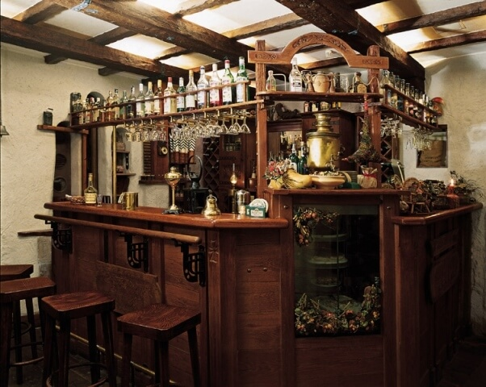
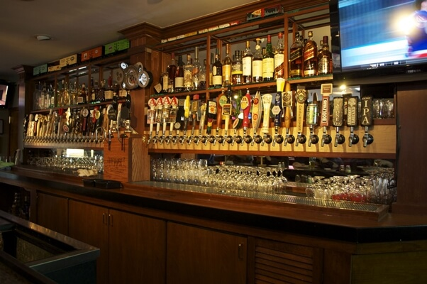
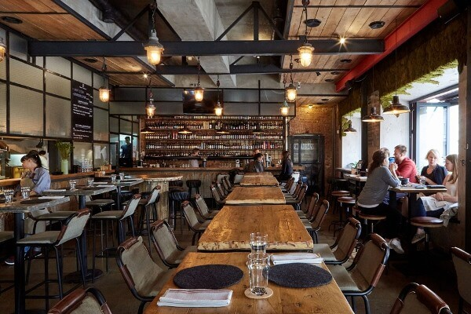

Ассортимент пива напрямую зависит от концепции бара, а также от вкусов и пожеланий предполагаемых посетителей. Правильно определиться с содержимым бара помогут простые рекомендации, основанные на местонахождении и специфике заведения.
Какой бы ассортимент ни присутствовал в баре, особенное внимание следует уделить качеству предлагаемого клиентам пива. Пиво должно быть свежим и соответствовать имиджу заведения.
Бар у дома
Посетители бара у дома, как правило, неприхотливы и часто нетребовательны к ассортименту пива. Они посещают заведение с целью отдохнуть и расслабиться, а не попробовать новый изысканный вкус алкогольных напитков и дать ему оценку. Кроме того, покупатели рассчитывают на низкие или средние цены, что также следует учитывать при выборе ассортимента. В целом, для бара у дома достаточно нескольких самых простых сортов пива:
- Пшеничное пиво;
- Классический темный лагер;
- Классический светлый лагер.
Разнообразить выбор можно пивом сорта стаут или портер, а также фруктовыми разновидностями напитка – для женской части посетителей.
В баре у дома вполне хватает 3-5 кранов разливного пива, однако в таких заведениях часто востребовано и бутылочное пиво, ассортимент которого всегда можно расширять, сотрудничая с разными поставщиками. Здесь не будут востребованы дорогие и элитные сорта, поскольку их посетители не готовы тратить много денег на отдых в баре.
Паб
Многие люди не видят разницы между барами и пабами, и часто считают эти слова синонимами. На самом деле специфики этих заведений имеют много отличий, в частности:
- Атмосфера паба более спокойная и тихая, чем бара. Некоторые пабы даже считаются семейными заведениями. В баре же преимущественно веселая, шумная и молодежная обстановка.
- Меню бара состоит, в основном, только из алкогольных напитков и закусок к ним. В пабе же можно насытиться обедом из нескольких блюд, завершив его вкусным алкогольным или безалкогольным пивом.
- В баре предлагаются разные сорта алкогольных напитков, а в пабе, как правило, присутствует широкий ассортимент разнообразных видов пива – от обычных до изысканных и эксклюзивных.
Именно поэтому выбор напитков в баре и в пабе будет отличаться. Чтобы определить, какое пиво будет востребовано в пабе, необходимо заранее определиться с его направленностью. Существует множество видов пабов, основные из них:
- Ирландский;
- Британский;
- Бельгийский.
Ассортимент пива должен быть привязан к традициям страны. Также важно, чтобы напитки гармонично сочетались с едой из меню, которую предлагает посетителям заведение.
Люди посещают пабы с целью отдохнуть, продегустировать новую еду и напитки, расслабиться, пообщаться с друзьями в непринужденной обстановке. Выбор пива в заведении должен быть разнообразным – не менее 10 кранов разливного пива разных сортов. Здесь допускаются напитки разных ценовых категорий, так как посетители паба могут иметь разные цели и финансовые возможности.
Ресторан или бар крафтового пива
Крафтовое пиво – это пиво, которое производится небольшими партиями по традиционным или авторским рецепта пивоварен. Заведение, которое специализируется на таких напитках, посещают настоящие ценители, которые достаточно требовательны к разнообразию и качеству ассортимента. Здесь должно присутствовать от 10 до 15 кранов разливного пива, в зависимости от количества клиентов и их вкусовых предпочтений. В ассортименте обязательно должны присутствовать стандартные сорта, но исключительно высокого качества. Список представленных сортов может быть следующим:
- Стаут;
- Портер;
- Эль (красный или темный);
- Светлый лагер;
- Пильзнер;
- Ламбик (ламбики предпочитает женская аудитория, если владелец заведения делает ставку на женские компании, лучше иметь несколько вариантов в запасе);
- ИПА;
- Грюйт;
- Пшеничное пиво;
- Сезонное пиво.
В целом, ассортимент ресторана или бара крафтового пива зависит только от креативности и финансовой возможности хозяина заведения.
Также здесь обязательно должен присутствовать максимально широкий выбор качественного бутылочного пива разных ценовых категорий. Преимущественно посетителями пивных ресторанов являются люди со средним и высоким достатком, поэтому нужно уделить внимание элитным и дорогим маркам и сортам.
Итак, ассортимент пива в баре – это несложный, но требующий внимания вопрос. Правильно оценив специфику заведения и интерес потенциальной целевой аудитории, можно грамотно подобрать пивную карту и окупить бизнес уже на начальных стадиях развития.